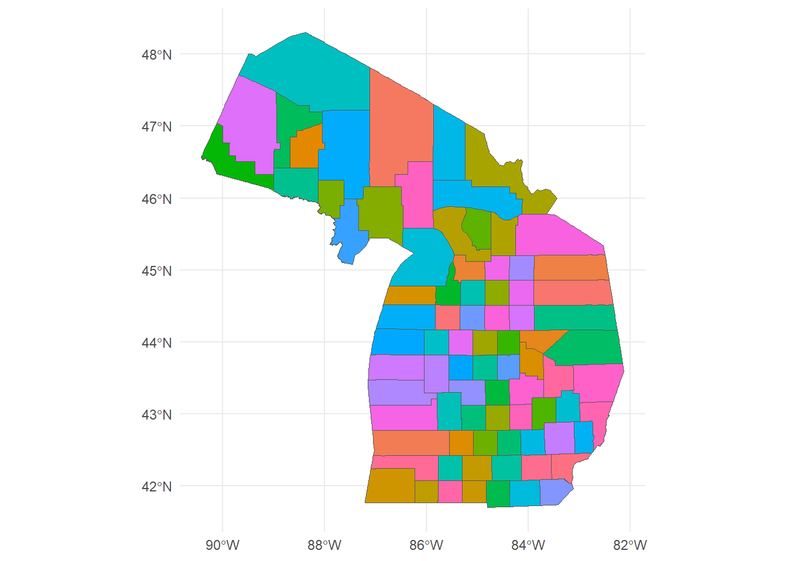
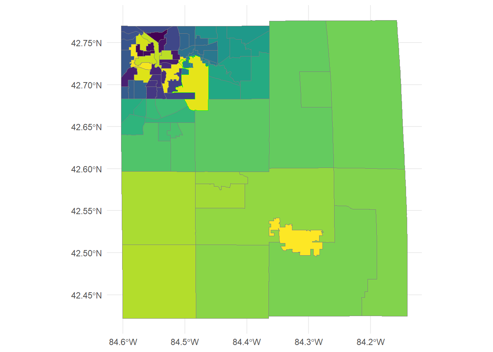
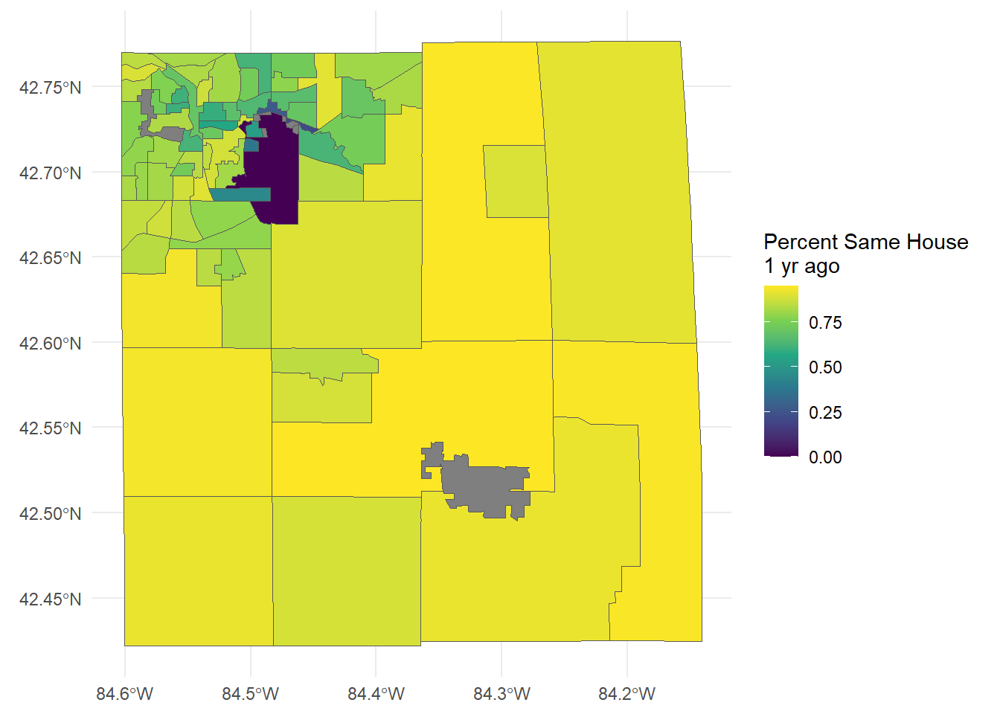

library(tigris)
library(tidycensus)
library(tidyverse)Geospatial with R
Our last class!
A little more on Geospatial in R
We went over the basics and got some practice using geospatial data in R. Let’s look closely at the tidycensus packages. Thus far, we have used tigris to get TIGER/line census boundaries for things like counties. tidycensus does more than this – we can pull actual census data with its geospatial references (the polygons referring to the counties, tracts, block groups, and blocks) along with census data because tidycensus interfaces with tigris to combine the census data and the census geographies.
Tigris for polygons
Make sure you load tigris (for spatial data) and tidycensus for census data to attach to the spatial data:
We already saw that we could extract counties using the tigris::counties function. Some “census geographies” change from year to year. Counties don’t (usually), but census tracts, block groups, and blocks do. These last three are all nested units of observation - tracts hold multiple block groups, each block group holds multiple blocks. Blocks are pretty small, and a lot of census data isn’t reported at that level for confidentiality. Block groups don’t report all data, either. Tracts are usually the most reliable balance between “census data availability” and “small geographic area”. We’ll use the 2010 census boundaries by specifying year = 2010.
Let’s look at MI counties, then look at Ingham County census tracts:
MI.counties = tigris::counties(state='MI', year = 2010, progress_bar = FALSE)
ggplot(MI.counties, aes(fill = NAME10) ) +
geom_sf() +
theme_minimal() + theme(legend.position = 'none')
As you can see, we get some counties that extend into the Great Lakes. That’s OK - we can use st_intersect with a map of the Great Lakes to clean that up, but I won’t do that here.
Now, the census tracts for Ingham County. We can use str_detect to find the County FIPS for Ingham:
Ingham_FIPS = MI.counties %>%
dplyr::filter(str_detect(NAME10, 'Ingham')) %>%
dplyr::select(COUNTYFP, STATEFP) %>%
pull(COUNTYFP)
Ingham.tracts = tigris::tracts(state='MI', county = Ingham_FIPS, year = 2010, progress_bar = FALSE)
print(Ingham.tracts %>% dplyr::select(TRACTCE10, NAME10, GEOID10))Simple feature collection with 81 features and 3 fields
Geometry type: MULTIPOLYGON
Dimension: XY
Bounding box: xmin: -84.60314 ymin: 42.42194 xmax: -84.1406 ymax: 42.77664
Geodetic CRS: NAD83
First 10 features:
TRACTCE10 NAME10 GEOID10 geometry
2011 006600 66 26065006600 MULTIPOLYGON (((-84.54269 4...
2012 003103 31.03 26065003103 MULTIPOLYGON (((-84.52985 4...
2013 006800 68 26065006800 MULTIPOLYGON (((-84.56177 4...
2014 006700 67 26065006700 MULTIPOLYGON (((-84.56159 4...
2015 006001 60.01 26065006001 MULTIPOLYGON (((-84.2875 42...
2016 006002 60.02 26065006002 MULTIPOLYGON (((-84.21456 4...
2017 002101 21.01 26065002101 MULTIPOLYGON (((-84.53305 4...
2018 007000 70 26065007000 MULTIPOLYGON (((-84.58218 4...
2023 001703 17.03 26065001703 MULTIPOLYGON (((-84.58662 4...
2024 004494 44.94 26065004494 MULTIPOLYGON (((-84.46658 4...Notice the GEOID10 starts with the MI FIPS (26), the Ingham FIPS (065), then the 6 digits that make up the TRACTCE10 value. This is because tracts are nested in states and counties.
Finally, let’s show all the Ingham County tracts. I’ve changed the color mapping for the col aesthetic so that the tract that holds MSU will be outlined in green:
ggplot(Ingham.tracts, aes(fill = TRACTCE10, col = (NAME10=='9800'))) +
geom_sf() + theme_minimal() + theme(legend.position = 'none') + scale_fill_viridis_d() +
scale_color_manual(values = c('TRUE' = 'green','FALSE' = 'gray50'))
Tidycensus
Tidycensus takes some getting used to because census data is very complicated, has many geographies, and many subsets (e.g. you could be asking about the age of a specific combination of race and income). Here, we’re going to learn two things: how to find some basic census data by tract, and how to extract it with tidycensus.
First, we can use the tidyverse author’s “basic usage” page as a guide: https://walker-data.com/tidycensus/articles/basic-usage.html. There are important directions for getting a Census API key, which must be added to your system. tidycensus makes it easy - once you get your key (free from the US census, see the link for instructions), you just add it to your system using the census_api_key function. You only have to do it once, it records the API key in your system files, and will find it automatically on subsequent projects.
Finding variables
This is actually pretty tricky. The census asks many questions about demographics and other topics (house characteristics, earnings, health, etc.) and it can be hard to find exactly what you’re looking for. We’re going to seek some simple data: the average income, and the average “tenure” (how long someone has lived in their current residence) in each tract in Ingham County.
tidycensus has some useful functions for finding variables, especially when combined with str_detect, which helps us find certain words or phrases (our RegExp skills come in handy!) in the census variable names. Variables are identified by an ID, not by name. “P013001”, for instance, is the median age in a given geography. All variables are not available at all geographic units: “P013001” is available for all state, county, tract, and block group, but not block. The link above shows all of the geographies available.
To make things even more complicated, there is more than the decennial census. The American Community Survey (ACS) samples 1-5% of the population each year, and reports yearly but on a limited number of variables. We’ll use the ACS five-year (acs5) as it has more easily available data, even if it asks fewer questions. We’ll use the 2019 data, the most recently available.
Let’s start by finding all variables that contain “income”. Variable descriptions have the variable name as well as the “concept”. We want to use “concept” to search for our term. Each concept has multiple variables with it:
allvars = load_variables(2019, 'acs5')
incvars = allvars %>%
dplyr::filter(str_detect(concept, 'MEDIAN INCOME'))
incvars[1:5,]# A tibble: 5 × 4
name label concept geography
<chr> <chr> <chr> <chr>
1 B06011PR_001 Estimate!!Median income in the past 12 months … MEDIAN… <NA>
2 B06011PR_002 Estimate!!Median income in the past 12 months … MEDIAN… <NA>
3 B06011PR_003 Estimate!!Median income in the past 12 months … MEDIAN… <NA>
4 B06011PR_004 Estimate!!Median income in the past 12 months … MEDIAN… <NA>
5 B06011PR_005 Estimate!!Median income in the past 12 months … MEDIAN… <NA> We got lucky - the first concept is “MEDIAN INCOME IN THE PAST 12 MONTHS (IN 2019 INFLATION-ADJUSTED DOLLARS) BY PLACE OF BIRTH”. Now, we didn’t want the “place of birth” part (though…sounds interesting), but look at the first label. It is the !!Total:, meaning it is the median income when you combine all places of birth. The second label is !!Total:!!Born in state of residence, which is a subset of the total. Same with the next. We do not need to use the subsets in order to use the !!Total value. Note the name is B06011_001.
Lots and lots of variables will have the same total - the next variable B07011_001 (after the Puerto Rico version) is the median income broken down by whether or not the household lives in the same house, instead of by place of birth. It’s long, but you can see that it is “MEDIAN INCOME IN THE PAST 12 MONTHS (IN 2019 INFLATION-ADJUSTED DOLLARS) BY GEOGRAPHICAL MOBILITY IN THE PAST YEAR FOR CURRENT RESIDENCE IN THE UNITED STATES”
incvars[6:15,]# A tibble: 10 × 4
name label concept geography
<chr> <chr> <chr> <chr>
1 B06011_001 Estimate!!Median income in the past 12 months… MEDIAN… tract
2 B06011_002 Estimate!!Median income in the past 12 months… MEDIAN… tract
3 B06011_003 Estimate!!Median income in the past 12 months… MEDIAN… tract
4 B06011_004 Estimate!!Median income in the past 12 months… MEDIAN… tract
5 B06011_005 Estimate!!Median income in the past 12 months… MEDIAN… tract
6 B07011PR_001 Estimate!!Median income in the past 12 months… MEDIAN… <NA>
7 B07011PR_002 Estimate!!Median income in the past 12 months… MEDIAN… <NA>
8 B07011PR_003 Estimate!!Median income in the past 12 months… MEDIAN… <NA>
9 B07011PR_004 Estimate!!Median income in the past 12 months… MEDIAN… <NA>
10 B07011PR_005 Estimate!!Median income in the past 12 months… MEDIAN… <NA> While the values of the subsets will be different, the !!Total: variable will be the same. So, we can really choose any !!Total: variable for any set of variables in a concept that fits our search.
Let’s call up the median income using B06011_001. Note that we are naming our variables in the third line, and specifying that we only want county = '065' for Ingham:
ing.medincome = get_acs(geography = 'tract',
county = '065', state = 'MI',
variables = c(medincome = 'B06011_001'),
year = 2019)
head(ing.medincome)# A tibble: 6 × 5
GEOID NAME variable estimate moe
<chr> <chr> <chr> <dbl> <dbl>
1 26065000100 Census Tract 1, Ingham County, Michigan medincome 22994 6149
2 26065000400 Census Tract 4, Ingham County, Michigan medincome 29059 4043
3 26065000600 Census Tract 6, Ingham County, Michigan medincome 18549 4830
4 26065000700 Census Tract 7, Ingham County, Michigan medincome 17196 8455
5 26065000800 Census Tract 8, Ingham County, Michigan medincome 23142 5845
6 26065001000 Census Tract 10, Ingham County, Michigan medincome 30704 1982Since the ACS is a sample, the variable is returned as the estimate along with a margin of error, which we’ll ignore for now. Note that the data is “tidy” for now - each row is one observation of one variable. If we have multiple variables, we’ll have to keep it tidy. We’ll compare the B06011_001 with B007011_001:
ing.medincome = get_acs(geography = 'tract',
county = '065', state = 'MI',
variables = c(medincome = 'B06011_001',
medincome2 = 'B07011_001'),
year = 2019) %>% arrange(GEOID)
head(ing.medincome)# A tibble: 6 × 5
GEOID NAME variable estimate moe
<chr> <chr> <chr> <dbl> <dbl>
1 26065000100 Census Tract 1, Ingham County, Michigan medincome 22994 6149
2 26065000100 Census Tract 1, Ingham County, Michigan medincome2 22994 6149
3 26065000400 Census Tract 4, Ingham County, Michigan medincome 29059 4043
4 26065000400 Census Tract 4, Ingham County, Michigan medincome2 29059 4043
5 26065000600 Census Tract 6, Ingham County, Michigan medincome 18549 4830
6 26065000600 Census Tract 6, Ingham County, Michigan medincome2 18549 4830We got to name the variables (useful!) as you see in the variable column. However, there is more than one row per observation now: the results are not “tidy”. But clearly the two variable’s totals are the same, so we have convinced ourselves that !!Total: works for any of the different concepts that cover median income.
Often, the data we wish to pull is a total, but it is broken down (by race, income groups, etc.). This means we want one observation per row (census tract), but multiple columns representing the total and the breakdown of a variable. Imagine “race” by tract with counts of households by race. We’ll have to use output = 'wide' in our get_acs call:
ing.medincome.wide = get_acs(geography = 'tract',
county = '065', state = 'MI',
variables = c(medincome = 'B06011_001',
medincome2 = 'B07011_001'),
year = 2019,
output = 'wide') %>% arrange(GEOID)
head(ing.medincome.wide)# A tibble: 6 × 6
GEOID NAME medincomeE medincomeM medincome2E medincome2M
<chr> <chr> <dbl> <dbl> <dbl> <dbl>
1 26065000100 Census Tract 1, Ing… 22994 6149 22994 6149
2 26065000400 Census Tract 4, Ing… 29059 4043 29059 4043
3 26065000600 Census Tract 6, Ing… 18549 4830 18549 4830
4 26065000700 Census Tract 7, Ing… 17196 8455 17196 8455
5 26065000800 Census Tract 8, Ing… 23142 5845 23142 5845
6 26065001000 Census Tract 10, In… 30704 1982 30704 1982We still get to name the variables (so name wisely!). We get an Estimate and w Margin of error for each variable. We’ll mostly stick with the estimate and ignore the MoE.
Tidycensus and geographies
Now, let’s find the other variable we’re interested in - housing tenure. We’ll keep it simple and calculate the percentage of people in a tract who lived in the same house last year.
tenvars = allvars %>%
dplyr::filter(str_detect(concept, 'TENURE'))
tenvars[1:5,]# A tibble: 5 × 4
name label concept geography
<chr> <chr> <chr> <chr>
1 B07013PR_001 Estimate!!Total: GEOGRA… <NA>
2 B07013PR_002 Estimate!!Total:!!Householder lived in owner-o… GEOGRA… <NA>
3 B07013PR_003 Estimate!!Total:!!Householder lived in renter-… GEOGRA… <NA>
4 B07013PR_004 Estimate!!Total:!!Same house 1 year ago: GEOGRA… <NA>
5 B07013PR_005 Estimate!!Total:!!Same house 1 year ago:!!Hous… GEOGRA… <NA> Here, we get B07013_001, which is the total number of households, and B07014_004, which is the total number of households that lived in the same house a year ago. The ratio of these two tells us what percent didn’t move in the last year, which is what we want. We’re going to take the output in wide format so that we can calculate this ratio.
Now, with variable numbers in hand, we can pretty easily get the attached geography of interest. We just add geometry = TRUE to the get_acs call. We’re also going to ask for wide format, which gives us on row per tract and a column for each variable.
ing.tenure = get_acs(geography = 'tract',
county = '065', state = 'MI',
variables = c(samehouse = 'B07013_004',
totalhouse = 'B07013_001'),
geometry = TRUE, output = 'wide', progress_bar = FALSE,
year = 2019)
ing.tenureSimple feature collection with 81 features and 6 fields
Geometry type: MULTIPOLYGON
Dimension: XY
Bounding box: xmin: -84.60314 ymin: 42.42195 xmax: -84.14062 ymax: 42.77664
Geodetic CRS: NAD83
First 10 features:
GEOID NAME samehouseE
1 26065004302 Census Tract 43.02, Ingham County, Michigan 498
2 26065002800 Census Tract 28, Ingham County, Michigan 2396
3 26065005201 Census Tract 52.01, Ingham County, Michigan 5216
4 26065001200 Census Tract 12, Ingham County, Michigan 1201
5 26065006302 Census Tract 63.02, Ingham County, Michigan 3660
6 26065002200 Census Tract 22, Ingham County, Michigan 1349
7 26065000800 Census Tract 8, Ingham County, Michigan 2601
8 26065004494 Census Tract 44.94, Ingham County, Michigan 0
9 26065004700 Census Tract 47, Ingham County, Michigan 2346
10 26065006301 Census Tract 63.01, Ingham County, Michigan 3580
samehouseM totalhouseE totalhouseM geometry
1 165 2383 326 MULTIPOLYGON (((-84.47205 4...
2 310 2656 296 MULTIPOLYGON (((-84.54808 4...
3 539 5961 481 MULTIPOLYGON (((-84.5826 42...
4 233 2137 239 MULTIPOLYGON (((-84.54113 4...
5 242 4139 201 MULTIPOLYGON (((-84.48344 4...
6 143 1577 110 MULTIPOLYGON (((-84.53812 4...
7 400 2987 403 MULTIPOLYGON (((-84.54287 4...
8 10 0 10 MULTIPOLYGON (((-84.46662 4...
9 181 2908 186 MULTIPOLYGON (((-84.43269 4...
10 257 4221 213 MULTIPOLYGON (((-84.48351 4...We get an “E” at the end of the variable which stands for “Estimate” (the “M” is “Margin of Error” since the ACS is a sample). We can now calculate the percent living in the same house they were in last year:
ing.tenure = ing.tenure %>%
dplyr::mutate(percentSameHouse = samehouseE/totalhouseE) %>%
dplyr::select(GEOID, NAME, percentSameHouse)
ing.tenureSimple feature collection with 81 features and 3 fields
Geometry type: MULTIPOLYGON
Dimension: XY
Bounding box: xmin: -84.60314 ymin: 42.42195 xmax: -84.14062 ymax: 42.77664
Geodetic CRS: NAD83
First 10 features:
GEOID NAME percentSameHouse
1 26065004302 Census Tract 43.02, Ingham County, Michigan 0.2089803
2 26065002800 Census Tract 28, Ingham County, Michigan 0.9021084
3 26065005201 Census Tract 52.01, Ingham County, Michigan 0.8750210
4 26065001200 Census Tract 12, Ingham County, Michigan 0.5620028
5 26065006302 Census Tract 63.02, Ingham County, Michigan 0.8842716
6 26065002200 Census Tract 22, Ingham County, Michigan 0.8554217
7 26065000800 Census Tract 8, Ingham County, Michigan 0.8707734
8 26065004494 Census Tract 44.94, Ingham County, Michigan NaN
9 26065004700 Census Tract 47, Ingham County, Michigan 0.8067400
10 26065006301 Census Tract 63.01, Ingham County, Michigan 0.8481403
geometry
1 MULTIPOLYGON (((-84.47205 4...
2 MULTIPOLYGON (((-84.54808 4...
3 MULTIPOLYGON (((-84.5826 42...
4 MULTIPOLYGON (((-84.54113 4...
5 MULTIPOLYGON (((-84.48344 4...
6 MULTIPOLYGON (((-84.53812 4...
7 MULTIPOLYGON (((-84.54287 4...
8 MULTIPOLYGON (((-84.46662 4...
9 MULTIPOLYGON (((-84.43269 4...
10 MULTIPOLYGON (((-84.48351 4...The NA’s come from tracts with zero households in them (the haunted Seven Gables Nature Area, GM’s Lansing plant, industrial areas, etc.). Let’s plot this!
ggplot(ing.tenure, aes(fill = percentSameHouse)) +
geom_sf() + theme_minimal() + scale_fill_viridis_c() +
labs(fill = 'Percent Same House\n1 yr ago')
An alternative source for finding Census variables
We can also find census variables by searching the data.census.gov website. We are looking for tables, so click on “explore tables”.
First thing we want to do is set our level (e.g. block, block-group, tract, county, etc.) so that we are searching for data that exists at the level we want. No sense in searching for something you want at the county level to find out it’s only available at the state level! On the left side under “geography” click on the level you want (say, “census tract”) then choose a random state and tract – you’re only using this to find the variable’s code, not to actually retrieve data. I always use the first county in Alabama just because it’s small-ish so it doesn’t take long to load up.
With the tract(s) set on geography, go up to the search box and type in the topic you’re interested in. It’ll draw from decennial census, the ACS, and more. You can view the data (for the set of selected geographies) by clicking on the results to make sure the numbers look like you’d expect. That will also let you see the crosstabs – some data will have further breakdowns (by race, by tenure, etc.) and the crosstabs will show you what those breakdowns are, and if there is a “topline” number that serves your purpose.
Once you find the series you want, you’re getting close to being done. The variable code will be on the results (you’ll see “B….” or “H…” or “S….”). Note that and the source (ACS, decennial) and the year(s) you want. What’s missing, though? The _001 suffix! Frustrating, I know.
To find the exact variable you need, you’ll need what’s called a “table shell”. You can find them all here. Download the “table shells for all detailed data” for the data series and year you need (ACS 2021, decennial 2020, etc.) and search using your variable name. That’ll take you to the complete crosstabs available for that variable, including the _00X suffixes. Those are the variables (“table ID’s” in census terms) you’ll need to feed to tidycensus. You can name each of them as you see fit, take whichever ones you need (just the topline, or all of the crosstabs – it’s up to you).
Wrapping up
Finding census variables via tidycensus can be frustrating, and other sources exist to help lookup census tables. One useful tip is that you can use the “filter” button in your Rstudio View() window to interactively filter the concept column from load_variables. Once you find what you want there, then use the get_acs function in your code. Fundamentally, it’s a lot of information with the ability to subset in many way, which makes it hard to wade through and find what you’re looking for.
Try it! (This will be your Lab 15, due on Monday)
Load up all the necessary packages
Find the FIPS for your home county (or a county you’re interested in)
Choose a variable you’re interested in. Finding census variables can be tricky! If you want a challenge, find more than one variable that can construct something you’re interested in (like our “percent of housholds residing at the same address a year ago” measure).
Using
load_variables, find the best representation of that variableMake a map of that variable at the census tract level